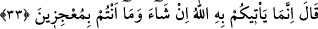
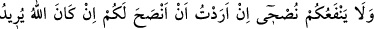
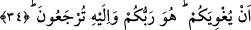

32. Dediler ki: “Ey Nûh! Bizimle mücâdele ettin, hem bizimle mücâdelede çok
ileri gittin. Eğer doğrulardan isen haydi bizi tehdit ettiğin şeyi bize getir!”
“Dediler ki: Ey Nûh! Bizimle mücâdele ettin, hem bizimle mücâdelede çok ileri
gittin.” mücâdeleyi çok uzattın...
Mücâdele, iki hasımdan birinin diğerini susturmak, görüşünden şiddetle vazgeçirmeye
çalışması mânâsındaki cedelden gelmektedir.
“Eğer” iddiâ ve tehdîdinde “doğrulardan isen haydi bizi” kendisi ile “tehdid
ettiğin şeyi” yani dünyevî/muaccel azâbı “bize getir!” Çünkü seninle yaptığımız
münâzaralar bizi müteessir ediyor.
33. (Nuh) dedi ki: “Dilerse onu size ancak Allah getirir. Ve siz (Allah’ı) âciz
bırakacak değilsiniz.”
Nuh “dedi ki: “Dilerse” âcilen ya da âhirette “onu size ancak Allah getirir.” Buna
ben vekil kılınmış değilim. Ayrıca bu benim kudret sahama giren şeylerden değildir.
Burada azâbın, azâbı gerektiren fiiller sebebiyle değil de Allah’ın dilemesi sebebiyle
gerçekleştiğine dâir bir işaret vardır.
“Ve siz” kaçmak ya da konuşurken savunduğunuz gibi kendinizi savunarak Allah’ı
“âciz bırakacak değilsiniz.”
İmam Râzî der ki: “Hiç kimse O’nu âciz bırakamaz.” Yâni yapmak istediği hiçbir
şeye engel olamaz. Mu‘ciz, gücü dahilinde olan şeyleri yapan kişidir. Başkası dilediğini
yapma konusunda onun karşısında eli kolu bağlı kalır. Böylece o kimse, onu âciz
bırakmış olmakla vasfedilir. İşte “Ve siz (Allah’ı) âciz bırakacak değilsiniz.” sözünün
mânâsı şudur: Gücünüz dâhilinde olanı bile yapmanıza imkân yoktur ki Allah’ın size
azap indirmeyi dilemesi durumunda dilediği bu azap Allah için imkansız/mümteni
olsun.”